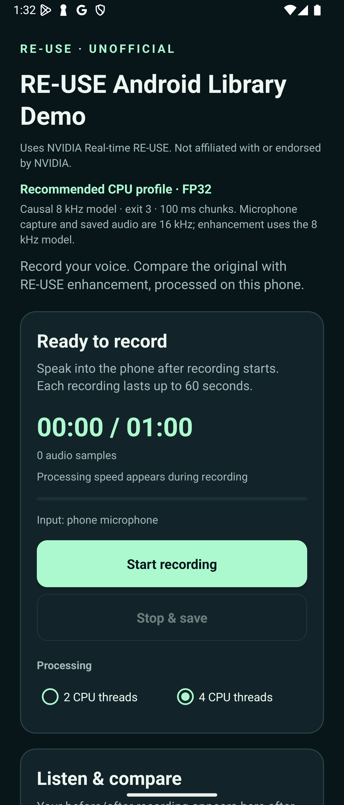

Install the sample APK
Download the demo on your Android phone and open the APK in Android’s package installer. Use the release’s SHA256SUMS to verify the file.
On-device speech enhancement
Record with your phone’s microphone. Let RE-USE process your voice as it arrives. Then listen to the same recording before and after.
An unofficial integration of NVIDIA Real-time RE-USE. This project is not affiliated with, endorsed by, or maintained by NVIDIA.

No glasses, Even app, Bluetooth accessory, or account needed. Open the app and start recording.
The CPU runs the enhancement. Audio stays in app-private storage unless you choose to share it. No Internet permission.
Play the original and enhanced WAVs after recording. Export both through Android’s share sheet when you want.
Try it in three steps
A simple microphone demo, with the same processing libraries available for your own app.
Download the demo on your Android phone and open the APK in Android’s package installer. Use the release’s SHA256SUMS to verify the file.
Open RE-USE Demo (Unofficial). Tap Start recording, allow microphone access, and speak after preparation finishes. Tap Stop & save when you’re done.
Tap Play before RE-USE and Play after RE-USE to compare the same capture. Use Share both WAV files to export your pair.
Keep the screen visible. Each recording stops at 60 seconds, or when you leave the screen. Playback is available after recording; the demo does not monitor live audio through the speaker. Read the full phone guide →
Tested with the Xperia 1 IV’s built-in microphone. Two short captures (9.62 s and 5.70 s) processed every received sample, with zero application drops and zero model calls over 100 ms. Longer runs and continuous speaker playout remain unverified.
View the test receipt ↗For Android developers
The demo is an application adapter. Inference and PCM processing live in separate reusable AARs.
:reuseModel loading, streaming STFT, recurrent state, chunked enhancement, and native ONNX custom operations.
Download core AAR:reuse-audioBounded 16 kHz PCM sessions, FIR resampling, orderly stop and drain, before/after WAVs, and timing statistics.
Download audio AAR:phone-demoAndroid microphone capture, permission handling, recording controls, playback, and user-initiated sharing.
Explore the demo sourceModel weights are not included in either AAR. The guide covers the matching model, ONNX Runtime dependency, and verified APK-to-model preparation tool. The reusable libraries do not depend on the demo, Even app, or G2 transport. The build also includes x86_64 for development.
A few useful details
This is a research preview. The app makes its processing load visible so you can evaluate it on your own device.
RE-USE processes microphone audio while the recording is happening. Processing speed depends on the phone, CPU load, temperature, and selected thread count. Short overruns can be buffered. If the bounded 500 ms input queue fills, the session stops with an error. This is not a zero-delay guarantee.
This demo saves both versions and offers playback after you stop, avoiding speaker-to-microphone feedback. A saved WAV does not preserve time spent waiting for processing. Continuous AudioTrack playout and speaker-buffer underruns have not been verified.
The demo processes its own microphone capture. It does not replace Android’s system microphone or insert a global filter into calls, messaging, or other applications. Developers can integrate the libraries into their own PCM pipeline.
No. This is an independent, unofficial Android integration of NVIDIA Real-time RE-USE. It is not affiliated with, endorsed by, or maintained by NVIDIA.